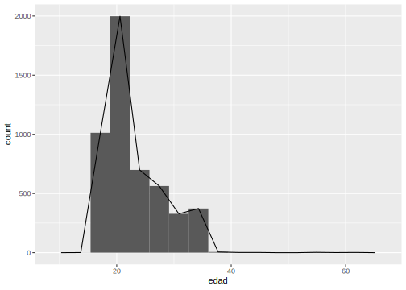
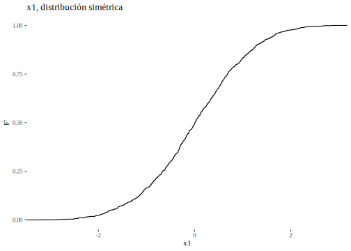
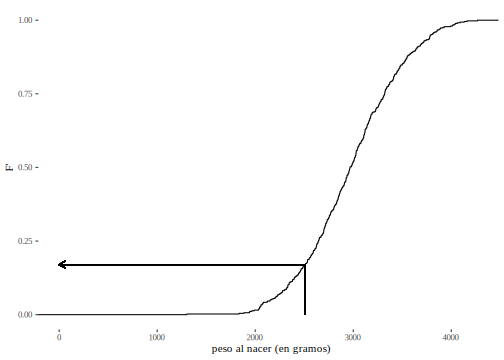

Capítulo 3 La expresión resumida de la información
La segunda etapa en la descripción de datos consiste en calcular medidas que los resuman, que los expresen de manera sintética. Esta etapa implica un nuevo alejamiento de la información bruta, ya que se pierde de vista no solo a los individuos -presentes en la matriz de datos-, sino también a las distribuciones de frecuencia. La ventaja de resumir es la posibilidad de presentar la información de modo muy sintético; con unas pocas medidas descriptivas se ofrece bastante información sobre los datos que se observan.
Estas medidas requieren operaciones de diferente nivel de complejidad, por lo que apelan a diferentes propiedades de las escalas de medición, entonces no serán las mismas las medidas que se puedan calcular en una escala nominal que en una ordinal, intervalar o proporcional.
El objetivo de describir el conjunto de datos se logrará indicando tres tipos diferentes de medidas. En primer lugar, haremos referencia a las medidas de posición. Estas medidas indican en torno a qué valores se distribuyen las observaciones. En segundo lugar, mencionaremos las medidas de dispersión (conocidas también como de variabilidad), que muestran si los datos están concentrados alrededor de las medidas de centralidad o si están alejados de esas medidas centrales. En tercer lugar, se describe la forma que toma la distribución, medida con dos indicadores: simetría y curtosis.
A los fines de la notación usada para referirse a cada una de estas medidas descriptivas, asumiremos que trabajamos sobre datos provenientes de una muestra, de la que n representa la cantidad de casos observados.
3.1 Medidas de posición
Como las operaciones que pueda hacerse entre las categorías dependen del nivel de medición de las variables, las medidas que se puedan calcular también dependerán del nivel de medición. Por eso las presentaremos separadamente para cada nivel, siempre recordando que las operaciones que son válidas a un determinado nivel de medición también son válidas para niveles más altos. Por ejemplo: lo que pueda hacerse con variables nominales, vale también para ordinales y métricas, con los ajustes de casa caso.
3.1.1 Variables nominales: proporciones
Cuando se trabaja con una variable de nivel nominal, una manera sintética de presentar la información que ofrece la tabla de distribución de frecuencias es indicando la proporción de casos que se encuentran en una determinada categoría. Se trata de la frecuencia relativa simple (f’) de una categoría particular. La siguiente es la distribución de las respuestas a la pregunta “¿Con cuál de las siguientes frases está Ud. más de acuerdo?” (P8STGBS), proveniente de la base latinobarómetro:
| ¿Con qué frase está más de acuerdo? | f | f’ |
|---|---|---|
| Se puede confiar en la mayoría de las personas | 0.143 | 14.3 |
| Uno nunca es lo suficientemente cuidadoso en el trato con los demás | 0.857 | 85.7 |
| Total | 1 | 100 |
Podemos indicar la proporción de personas que respondió que se puede confiar caso como 0.143, que puede también expresarse como 14.3%. La elección de cuál categoría se elige para indicar la proporción depende de los objetivos de la descripción. Al elegir una categoría se llama la atención sobre ella, se la destaca, ya que la proporción restante incluye a todas las demás categorías, los “otros”. Esa proporción restante se obtiene restando de 1 (uno) la proporción indicada, o restando de 100 (cien) si ha expresado como porcentaje. En este ejemplo, diremos que 0.857 (que proviene de hacer 0.857) es la proporción de quienes no creen que se pueda confiar, o bien que éstos representan el 85.7% (85.7).
| La proporción es la frecuencia relativa correspondiente a una categoría particular. Usualmente se expresa como porcentaje. Se indica como \(p\). |
Esta medida descriptiva se usa a menudo cuando la variable nominal tiene solo dos categorías (variable dicotómica), ya que se presenta la proporción de una de ellas e inmediatamente se sabe que el complemento es la proporción de la otra.
Esta medida ya apareció al definir la proporción como el cociente entre la frecuencia propia de la categoría y el total de casos. Esta proporción puede también indicarse en variables de nivel de medición superior al nominal, pero no resulta de interés cuando hay gran cantidad de categorías. Así, por ejemplo, si se trata de la distribución de las notas de un parcial, no resulta útil indicar cuál es la proporción de cada calificación e indicar algo como “el 20% sacó 8” (lo que se vería en una tabla de distribución de frecuencias de las notas). Por el contrario, es común construir variables nominales a partir de las notas y, sí es de mucho interés indicar, por ejemplo, la proporción de promocionados, o la proporción de quienes quedaron libres, luego de haber categorizado las notas con un criterio teórico (el que define quiénes son los promocionados, regulares y libres)
3.1.2 Variables nominales: tasas
Se define habitualmente como tasa a la frecuencia relativa de un fenómeno en referencia a una población total, con la característica de tener en cuenta un período de tiempo. También es común el uso del término cuando se trata de hechos de poca incidencia, es decir que su frecuencia es pequeña. En esos casos se la suele expresar cada 1.000, cada 10.000, o inclusive cada 100.000 casos, en lugar de porciento. Por ejemplo, la tasa de desocupación en Argentina se define como la proporción de personas desocupadas, respecto del total de personas activas. Estas últimas son quienes tienen una ocupación o que sin tenerla la están buscando activamente. Está compuesta por la población ocupada más la población desocupada arrobaINDEC2018.
Las tasas de mortalidad por causas, indican la proporción de muertes ocurridas en un período de tiempo (usualmente un año), en un espacio geográfico (país, provincia, etc) por una determinada causa, respecto del total de la población que vivía a la mitad de ese año.
3.1.3 Variables nominales: razones
La palabra razones se usa a menudo para referirse a cocientes calculados entre conjuntos que no tienen elementos en común. Por ejemplo, se llama razón de masculinidad a la cantidad de hombres por cada 100 mujeres que hay en una población. Se obtiene dividiendo el total de varones por el total de mujeres (y luego multiplicando por 100), que son dos conjuntos que no se superponen. Esta medida se conoce también como índice de masculinidad.
Según el censo de 2010, la siguiente es el distribución por sexos de la población de Argentina en ese momento:
| sexo | personas | prop.sexos |
|---|---|---|
| varones | 19523766 | 0.487 |
| mujeres | 20593330 | 0.513 |
| Total | 40117096 | 1.000 |
La proporción de varones es 48.7% y la de mujeres de 51.3%; se calculan respecto de la población total. La razón de feminidad se obtiene dividiendo el total de mujeres en el de varones y a la inversa para la de masculinidad. El cociente \(\frac{20593330}{19523766}*100\), que es 105.5 indica que hay en la población 105 mujeres por cada 100 varones.
La diferencia entre una razón y una tasa es que en la primera, el numerador no está incluido en el denominador. Las tasas a veces son llamadas ratio.
3.1.4 Variables nominales: el modo
El modo, o moda, o valor modal es el valor de la variable (la categoría) que tiene la mayor frecuencia. Dicho de otra manera, el valor de la variable más frecuentemente observado10. Esta medida no requiere ningún cálculo, no exige ninguna propiedad de la escala de medición, por lo tanto se puede indicar en variables desde el nivel nominal, es decir en todos los niveles de medición.
Por ejemplo, la variable carrera que cursa, tiene la siguiente distribución:
| carrera | f | f’ |
|---|---|---|
| Educación | 44 | 0.29 |
| Psicología | 48 | 0.32 |
| Psicopedagogía | 58 | 0.39 |
| Total | 150 | 1.00 |
El modo es Psicopedagogía, que es la categoría de mayor frecuencia. Debe cuidarse de no cometer el error de señalar la frecuencia 58 como el modo; el modo no es la frecuencia más alta, sino la categoría de la variable que tiene mayor frecuencia. Para hallarlo, se identifica la más alta de las frecuencias y se señala la categoría que le corresponde. Puede usarse la frecuencia absoluta o la relativa para determinar cuál es el modo de la distribución.
La pregunta “¿Con cuál de las siguientes frases está Ud. más de acuerdo?” (P8STGBS), procedente de la base Latinobarómetro, tiene la siguiente distribución de frecuencias:
| P8STGBS | f |
|---|---|
| La democracia es preferible a cualquier otra forma de gobierno | 10785 |
| En algunas circunstancias, un gobierno autoritario puede ser preferible a uno democrático | 2526 |
| A la gente como uno, nos da lo mismo un régimen democrático que uno no democrático | 5075 |
Allí, la categoría modal es la que privilegia a la democracia como sistema de gobierno.
Si se trata de una variable de mayor nivel de medición, no hay ninguna diferencia. La variable concepto que los docentes asignan a los alumnos tiene la distribución de frecuencias siguiente:
| concepto | f |
|---|---|
| Excelente | 150 |
| Muy bueno | 350 |
| Bueno | 200 |
| Satisfactorio | 120 |
| No satisfactorio | 50 |
| Total | 870 |
En este ejemplo, 350 es la frecuencia más alta, por lo tanto, la categoría que a ella corresponde es el modo: el modo de la distribución es “Muy bueno”.
| El modo es la categoría -o el valor- de la variable que tiene mayor frecuencia. Se indica \(M_o\). |
Cuando se trabaja sobre variables intervalares o proporcionales discretas no hay diferencia en la identificación del modo de la distribución. El número de materias que tienen aprobadas alumnos que han terminado de cursar el primer año de su carrera se distribuye así:
| Cantidad de materias aprobadas | f |
|---|---|
| 0 | 30 |
| 1 | 150 |
| 2 | 200 |
| 3 | 300 |
| 4 | 250 |
| 5 | 200 |
| 6 | 20 |
| Total | 1150 |
En esta distribución, el modo es 3 materias aprobadas (\(M_o = 3\)), que es la categoría que tiene mayor frecuencia. Expresamos esto como “la mayor cantidad de alumnos que terminaron de cursar primer año han aprobado tres materias”.
Puede suceder que en una distribución no haya una única categoría de mayor frecuencia, sino que dos o más compartan la mayor frecuencia. Para 160 alumnos clasificados según la facultad en que cursan su carrera, tenemos:
| Facultad a la que pertenece | f |
|---|---|
| Arquitectura | 50 |
| Ingeniería | 40 |
| Psicología | 50 |
| Sociales | 20 |
| Total | 160 |
Vemos aquí que hay dos categorías que presentan la mayor frecuencia: Arquitectura y Psicología. Decimos en este caso que la distribución es bimodal que quiere decir que tiene dos modos.
| Una distribución es bimodal cuando dos categorías tienen la mayor frecuencia. Si son más las categorías que comparten la mayor frecuencia, la distribución se denomina multimodal. |
Una representación gráfica de una distribución bimodal, para la variable número de respuestas correctas en una prueba de opción múltiple, la siguiente:

Como modo en 6 y 9 aciertos, por eso se llama bimodal.
La moda tiene el inconveniente de ser independiente de la mayor parte de los datos, por lo que es sensible a cambios en los valores de la distribución. En efecto, las siguientes dos muestras de 130 escuelas tienen la misma moda (\(M_o = Pública\)), aunque son muy dispares:
| Gestión de la escuela | f | Gestión de la escuela | f |
|---|---|---|---|
| Pública | 50 | Pública | 100 |
| Privada laica | 45 | Privada laica | 20 |
| Privada confesional | 35 | Privada confesional | 10 |
| Total | 130 | Total | 130 |
3.1.5 Variables ordinales: percentiles
Como ya hemos visto, cuando las categorías de la variable están ordenadas pueden hacerse juicios como “mayor que” (\(>\)) o “menor que” (\(<\)), y el nivel de medición es ordinal. En este tipo de variables puede calcularse un conjunto de medidas de posición, que usan esa propiedad: la del orden entre categorías. Se trata de los percentiles, que se podrán también calcular para escalas superiores (intervalar y proporcional) pero no para escalas nominales, en las que el orden entre categorías no está presente. Los percentiles usan las frecuencias relativas acumuladas, por eso solo existen para variables de nivel superior al nominal. Veamos la presentación por medio de un ejemplo, con la tabla siguiente que tiene calculadas las frecuencias acumuladas y se muestran solo ellas:
| edad | F’ |
|---|---|
| 17 | 0.00 |
| 18 | 0.07 |
| 19 | 0.16 |
| 20 | 0.26 |
| 21 | 0.36 |
| 22 | 0.46 |
| 23 | 0.55 |
| 24 | 0.61 |
| 25 | 0.68 |
| 26 | 0.73 |
| 27 | 0.77 |
| 28 | 0.80 |
| 29 | 0.83 |
| 30 | 0.85 |
| 31 | 0.87 |
| 32 | 0.89 |
| 33 | 0.91 |
| 34 | 0.92 |
| 35 | 0.93 |
| 36 | 0.94 |
| 37 | 0.95 |
| 38 | 0.95 |
| 39 | 0.96 |
| 40 | 0.96 |
| 41 | 0.97 |
| 42 | 0.97 |
| 43 | 0.98 |
| 44 | 0.98 |
| 45 | 0.98 |
| 46 | 0.99 |
| 47 | 0.99 |
| 48 | 0.99 |
| 49 | 0.99 |
| 50 | 0.99 |
| 51 | 1.00 |
| 52 | 1.00 |
| 53 | 1.00 |
| 54 | 1.00 |
La frecuencia acumulada 0.26 indica que el 26% de los estudiantes tiene 20 años o menos. Se dice que el valor 20 años es el percentil 26 y se indica \(P_{26}\). El “percentil” en sí mismo no es una medida descriptiva, para que lo sea se debe especificar qué percentil es el que se calcula. En este ejemplo, cada frecuencia acumulada conduce a un percentil particular. El percentil 68 de la variable es 25 años, y se escribe \(P_{68} = 25\) años. Estas medidas se definen como el valor de la variable que deja por debajo un determinado porcentaje de observaciones.
Los percentiles tienen utilidad como medidas resumen cuando hay un volumen importante de observaciones, de lo contrario, es preferible mostrar la serie de datos. Su aplicación es que permiten describir cada valor de la variable de manera relativa al conjunto completo. Si la nota de un individuo corresponde al percentil 95, se sabe que es una nota alta, porque el 95% de todos los sujetos tiene una nota com esa o inferior. Eso puede expresarse diferente como: solo el 5% del conjunto tiene nota superior a la de él.
A continuación veremos algunos medidas que se definen del mismo modo que los percentiles; en base a las frecuencias relativas acumuladas.
3.1.6 Variables ordinales: la mediana
La mediana es el percentil 50, es decir que se define como el valor de la variable que deja por debajo la mitad del total de observaciones. Es importante tener en cuenta que se trata de la mitad de los casos y no la mitad de las categorías. La siguiente distribución presenta en serie simple ordenada el número de sesiones de psicoterapia que recibieron 9 pacientes internados en un hospital:
\[2, 2, 3, 5, 7, 10, 15, 19, 50\]
La mediana de estos datos es 7, porque es el valor que deja cuatro casos por debajo y también cuatro casos por encima. Atención a que la serie simple debe estar ordenada para poder identificar a la mediana.
Si la cantidad de observaciones fuera par como por ejemplo:
\[2, 2, 3, 5, 7, 10, 15, 19\]
El punto de corte correspondiente a la mitad de las observaciones se ubica entre 5 y 7, en este caso, la mediana es el promedio entre los dos valores centrales, que es 6.
Cuando hay valores repetidos en la parte central no resulta posible indicar la mediana, por ejemplo si la serie fuera:
\[2, 3, 7, 7, 7, 10, 15, 19\]
No puede señalarse a 7 como la mediana, porque es superado por tres valores (10, 15 y 19) pero supera solo a dos (2 y 3).
La mediana es una medida muy adecuada cuando se necesitan resumir datos que provienen de escalas ordinales o de nivel superior. Sin embargo, su cálculo no aporta nada en series simples con pocos casos (como los que acabamos de ver) ya que allí es más sencillo mostrar el conjunto completo de datos y no usar medidas resumen. Los ejemplos sirven para ilustrar el concepto, pero no se usa en la práctica. Las operaciones de resumen se justifican cuando se tiene un conjunto grande de datos.
| Se denomina mediana al valor de la variable que deja por debajo a la mitad de las observaciones. La mediana deja la misma cantidad de casos por debajo y por encima de ella. Se indica \(M_{dn}\). |
Veamos la forma de reconocer a la mediana cuando los datos están presentados en una distribución de frecuencias. La siguiente es una clasificación de hogares por nivel socioeconómico:
| Nivel socioeconómico | f (número de hogares) | F |
|---|---|---|
| Marginal | 40 | 40 |
| Bajo | 100 | 140 |
| Medio-bajo | 120 | 260 |
| Medio | 150 | 410 |
| Alto | 30 | 440 |
| Total | 440 |
El valor de la variable que acumula el 50% de los casos, es el que ocupa el lugar 220, que es mitad de los 440 casos del total. La serie ordenada de esta distribución, coloca a los 40 hogares marginales en lso primeros 40 lugares, pero indistintamente, porque no hay orden entre los hogares al interior de la categoría. Según la tabla, hasta la categoría “medio-bajo” se acumulan 260 hogares y hasta la categoría anterior hay 140 acumulados. De manera que el hogar que ocupa el lugar 220 (de la serie ordenada) es uno de los que se encuentran en la categoría “medio-bajo”. Diremos así que la mediana de esta distribución es “medio-bajo”. Como puede verse, esta categoría no acumula exactamente la mitad de las observaciones, pero es la que contiene a la observación que supera a la mitad y es superada por la otra mitad. Por esa razón la leemos como la mediana, diciendo que la mitad de los hogares tiene un nivel socioeconómico medio-bajo o inferior a ese. Decir que el que acumula 220 casos es “uno de los hogares de la categoría medio-bajo” es impreciso, porque todos los hogares son equivalentes en su nivel socioeconómico al interior de la categoría.
Esta imprecisión también aparece si se trata de una variable cuantitativa discreta. Si la variable es el número de síntomas a partir de los cuales fueron diagnosticados de esquizofrenia un conjunto de pacientes11:
| Cantidad de síntomas | f (número de pacientes) | F |
|---|---|---|
| 2 | 30 | 30 |
| 3 | 60 | 90 |
| 4 | 70 | 160 |
| 5 | 90 | 250 |
| Total | 250 |
La mitad del número total de casos es de 125 (\(250/2\) ó \((1/2)*250\)), ¿cuál es el caso que ocupa ese lugar? Vemos que hasta 3 síntomas se acumulan 90 pacientes y 160 hasta los 4. El paciente que ocupa el puesto 125 en la serie simple ordenada es uno de los que fueron diagnosticados a partir de 4 síntomas. Por esa razón indicamos a la mediana con ese valor: 4, \(M_{dn} = 4\). Nuevamente encontramos que no es exactamente el valor que acumula la mitad, sino uno de los que están en la categoría dentro de la cual se acumula la mitad de los casos. La primera categoría que tenga una frecuencia acumulada superior al 50% será la que contenga a la mediana. Es así porque la clase anterior no alcanza a acumular la mitad de las observaciones. La lectura del resultado es que la mitad de los pacientes fue diagnosticada de esquizofrenia en presencia de cuatro síntomas o menos.
Sea la variable número de materias aprobadas:
| Número de materias aprobadas | f | F |
|---|---|---|
| 0 | 30 | 30 |
| 1 | 150 | 180 |
| 2 | 200 | 380 |
| 3 | 300 | 680 |
| 4 | 250 | 930 |
| 5 | 200 | 1130 |
| 6 | 20 | 1150 |
| Total | 1150 |
La mitad de 1150 es 575, la primera frecuencia acumulada que supera a 575 es 680, que corresponde al valor 3. La mediana de esta distribución es entonces tres materias aprobadas y diremos que el 50% de los alumnos aprobó tres materias o menos.
Cuando se trata de variables de nivel intervalar o proporcional y con categorías agrupadas, el cálculo anterior puede refinarse. Así, primero se identifica la categoría (el intervalo) en que se encuentra la mediana, igual que en los dos ejemplos anteriores y luego se interpola dentro del intervalo para encontrar su valor exacto.
| Tiempo de reacción (en segundos) | f | F |
|---|---|---|
| 1.0 - 1.5 | 5 | 5 |
| 1.5 - 2.0 | 7 | 12 |
| 2.0 - 2.5 | 6 | 18 |
| 2.5 - 3.0 | 3 | 21 |
| 3.0 - 3.5 | 8 | 29 |
| 3.5 - 4.0 | 5 | 34 |
| Total | 34 |
La mitad de las 34 observaciones es 17, por lo que debe encontrarse una observación que tenga frecuencia acumulada de 17. Ese valor no aparece en la F, el primero que lo supera es 18, entonces la mediana estará en el intervalo 2,0-2,5. Esto es así porque hasta 2,0 se acumulan 12 casos (la F de la categoría anterior) y hasta 2,5 se acumulan 18. Nuestros 17 casos se acumulan para un valor de la variable que está entre 2,0 y 2,5.
Debemos ahora encontrar qué valor exactamente es la mediana, dentro del intervalo 2,0-2,5. La fórmula para este procedimiento es la siguiente:
\[M_{dn} = l_{i} + i*\left( \frac{\frac{n}{2} - F_d}{f_{p}} \right)\]
En la que:
\(l_i\) indica el límite inferior del intervalo en que se encuentra la mediana, en este caso es 80.
\(i\) es la amplitud del intervalo, es decir la diferencia entre los límites \(2.0-2.5 = 0.5\).
\(\frac{n}{2}\) es la mitad del número total de observaciones, es este caso, 17.
\(F_d\) es la frecuencia acumulada por debajo de la categoría que contiene la mediana, en esta tabla es 12.
\(f_p\) es la frecuencia propia del intervalo en que se encuentra la mediana. Es la frecuencia absoluta (no la acumulada), en este ejemplo es 6.
Reemplazando resulta:
\[M_{dn} = 2.0 + 0.5*\left( \frac{17 - 12}{6} \right) = 2.0 + 0.5*\left( \frac{5}{6} \right) = 2.42\]
Conviene detenerse en el orden en que se realizaron las operaciones. El signo más (+) separa términos, por lo que debe primero resolverse el segundo de ellos y luego recién sumar 2.0. Un error frecuente es el de sumar \(2.0 + 0.5\) y luego multiplicar por el resultado del paréntesis, eso es incorrecto.
Por cierto que debe verificarse que el valor encontrado se ubique dentro del intervalo; en este ejemplo, la mediana no podría ser menor que 2.0 ni mayor que 2.5. Observemos también que el número de categorías de la variable, que es de 6, no participa en el cálculo de la mediana, de ningún modo se trata de una categoría que esté “al medio”.
El resultado obtenido nos dice, según la definición de la mediana que “el 50% de los sujetos experimentales reaccionó en un tiempo de 2.42 segundos o inferior”. Es muy importante la última parte de la lectura, porque cuando decimos “o inferior” incluimos los valores por debajo del indicado. De lo contrario, si se omite “o menos” se estaría diciendo que la mitad de los sujetos tardó exactamente 2.42 segundos.
La mediana encontrada, de 2.42, es un valor razonable a partir de la observación de la tabla: la categoría de la mediana acumulaba 18 casos, que es apenas más que la mitad de las observaciones (17), por lo que era de esperar que la mediana apareciera cerca del límite superior del intervalo, que es lo que sucedió.
Este procedimiento para calcular la mediana es imperfecto, porque supone que los valores están distribuidos de manera uniforme dentro de cada intervalo. Si los 6 valores que contiene el intervalo 2.0 – 2.5, fueran todos iguales a 2.01, por ejemplo, la mediana sería un número bastante menor al que se calculó con este método. El uso de la interpolación solo se justifica en situaciones en que la única información disponible es la tabla con los valores agrupados; por el contrario, si se cuenta con la matriz de datos, el cálculo debe hacerse usando todos los valores observados de la variable. Como esto es largo para hacer manualmente, se solicita a un software especializado.
Variables métricas: la media o promedio
Si se ha alcanzado un nivel de medición intervalar o proporcional, es posible hacer uso de las propiedades12 que estas escalas tienen. Recordemos que además de designar y ordenar, las escalas intervalares conservan las distancias entre observaciones, y las proporcionales agregan la proporcionalidad de los valores absolutos y el carácter absoluto del cero. En este nivel los números que representan las categorías (o valores) pueden tratarse como tales y se puede operar con ellos. Antes de dar una definición de la media o promedio, veamos la idea intuitiva que tenemos, ya que se trata de una medida de mucho uso. Cuando queremos calcular un promedio “sumamos y dividimos por la cantidad de casos”. Así, si tres personas cometen 5, 8 y 12 errores cada uno, el promedio de esa variable (número de errores) es \(\frac{5 + 8 + 12}{3} = \frac{25}{3} = 8.33\). Usaremos la expresión \(\overline{x}\) para referirnos a la media, con lo que el resultado se escribe: \(\overline{x} = 8.33\) errores.
¿Cómo extenderemos esta forma de cálculo al caso en que la variable no está presentada en serie simple sino en distribución de frecuencias? Recordando que la frecuencia indica la cantidad de veces que cada valor se repite, por lo que habrá que considerar cada valor tantas veces como lo indique su frecuencia absoluta simple. Veamos un ejemplo en el que se cuenta el número de materias aprobadas:
| Número de materias aprobadas | f |
|---|---|
| 0 | 30 |
| 1 | 150 |
| 2 | 200 |
| 3 | 300 |
| 4 | 250 |
| 5 | 200 |
| 6 | 20 |
| Total | 1150 |
El valor 0 (cero) está repetido 30 veces, lo que indica que hay 30 alumnos que no han aprobado aún ninguna materia. Del mismo modo, 150 alumnos aprobaron 1 materia, etc., por lo que si estuvieran presentados en serie simple, se sumarían los 1150 valores (30 veces el 0, 150 veces el 1, etc.) y esa suma se dividiría por 1150. Para hacerlo sobre la distribución de frecuencia, se multiplica cada valor de la variable por su frecuencia (que es equivalente a sumarlo tantas veces como aparece) y se divide por el total de casos. Resulta:
\[\overline{x} = \frac{0*30 + 1*150 + 2*200 + 3*300 + 4*250 + 5*200 + 6*20}{1150} = 3.10\]
La expresión formal de este cálculo es:
\[\overline{x} = \frac{\sum_{i = 1}^{k}{x_{i}*f_{i}}}{n}\]
En la que \(x_i\) es cada valor de la variable, \(f_i\) es su frecuencia absoluta simple, \(k\) es el número de categorías y \(n\) es el total de observaciones. La fórmula indica que cada valor de la variable (\(x_i\)) se multiplica por su frecuencia (\(f_i\)), se suman desde el primero (\(i=1\)) hasta el último (\(k\)) y el resultado se divide por el total de casos (\(n\)).
Veamos que no se trató como podríamos haber pensado rápidamente, de sumar desde el cero hasta el seis y dividir por siete. Haber hecho eso habría implicado dos errores: el primero es el de no considerar cuántas veces está repetido cada valor (su frecuencia absoluta simple), el segundo es el de confundir el número de casos (1150) con el número de categorías (7). Este último error puede provenir de una confusión entre la presentación en serie simple o en distribución de frecuencias. Cuando se observa una serie simple, los valores “sueltos” de la variable coinciden con sus categorías, pero cuando se agrupa, cada categoría incluye cierta cantidad de casos que tienen el mismo valor, lo cual está indicado en la frecuencia de cada categoría.
En el ejemplo anterior entonces, el número promedio de materias aprobadas es 3.10. Este número no es entero y no es un valor que se pueda observar; nadie tiene 3.10 materias aprobadas. Sin embargo, es valioso para caracterizar a la distribución completa y para hacer comparaciones. Por ejemplo, si en un grupo de alumnos la media es de 3,10 materias aprobadas y en otro de 3.90; puede decirse que en el segundo grupo los alumnos han aprobado -en promedio-, más materias; aunque ninguno haya aprobado 3.10 ni 3.90 materias.
Por el momento ofreceremos una definición operacional de la media, más adelante podrá darse una definición conceptual, basada en sus propiedades.
| La media (o promedio) es un valor de la variable obtenido sumando todas las observaciones multiplicadas por su frecuencia absoluta y dividiendo el resultado en el número total de casos. Se indica como \(\overline{x}\) (equis media). |
Cuando la distribución de frecuencias presenta los datos agrupados, aparece el problema de no tener un único valor en cada categoría. Por ejemplo y nuevamente en el caso de los tiempos de reacción:
| Tiempo de reacción (en segundos) | f |
|---|---|
| 1.0 - 1.5 | 5 |
| 1.5 - 2.0 | 7 |
| 2.0 - 2.5 | 6 |
| 2.5 - 3.0 | 3 |
| 3.0 - 3.5 | 8 |
| 3.5 - 4.0 | 5 |
| Total | 34 |
Aquí no hay un valor único en cada categoría, sino un intervalo que incluye diferentes valores. Esto se resuelve considerando, para cada intervalo, su marca de clase (el punto medio), que es el promedio de los extremos de cada intervalo. La siguiente tabla agrega las marcas de clase de cada intervalo, indicadas como \(x'\):
| Tiempo de reacción (en segundos) | x’ | f |
|---|---|---|
| 1.0 - 1.5 | 1.25 | 5 |
| 1.5 - 2.0 | 1.75 | 7 |
| 2.0 - 2.5 | 2.25 | 6 |
| 2.5 - 3.0 | 2.75 | 3 |
| 3.0 - 3.5 | 3.25 | 8 |
| 3.5 - 4.0 | 3.75 | 5 |
| Total | 34 |
Ahora puede usarse el método anterior para calcular la media, tomando las marcas de clase como los valores de la variable:
\[\overline{x} = \frac{1.25*5 + 1.75*7 + 2.25*6 + 2.75*3 + 3.25*8 + 3.75*5}{34} = 2.5\]
Resulta así que el tiempo promedio de reacción es de 2.5 segundos. Este procedimiento es impreciso, porque asigna a todos los casos que están dentro de cada categoría el mismo valor (el centro del intervalo) y se justifica en situaciones en que la única información disponible es la tabla con los valores agrupados; si se cuenta con la matriz de datos, el cálculo debe hacerse usando todos los valores observados de la variable, recurriendo a un software especializado cuando sean muchos datos.
Si bien la media es una medida muy valiosa para resumir un conjunto de datos, a veces se hace un uso abusivo de ella, al aplicarla a variables que no tienen el nivel de medición adecuado para autorizar su uso. Un ejemplo de esto es el caso de las calificaciones escolares, que solo permiten ordenar a los alumnos según los resultados, pero que no implican la proporcionalidad de los valores (quien obtiene 10 no sabe el doble que quien obtiene 5). Aun así, es habitual que se calcule incorrectamente el “promedio de las notas”.
3.1.7 Los cuartiles
Si la variable tiene un nivel de medición ordinal o superior, entonces podemos usar el mismo razonamiento con el que definimos la mediana para hacer cortes más finos en una distribución de frecuencia. Así, si la mediana nos indica el valor de la variable que deja por debajo la mitad de los casos, es lícito preguntar también por el valor que deja por debajo un cuarto de los casos, o también el que deja por debajo las tres cuartas partes de las observaciones. Estos puntos de corte se denominan respectivamente: primer cuartil y tercer cuartil.
El primer cuartil es el valor de la variable que deja por debajo un cuarto, o el 25% del total de observaciones.
El tercer cuartil es el valor que deja por debajo las tres cuartas partes o el 75% del total de observaciones. Como se ve, tanto el modo de cálculo como la interpretación son análogos a la mediana. Veamos su aplicación a los ejemplos anteriores:
| Número de materias aprobadas | f | F |
|---|---|---|
| 0 | 30 | 30 |
| 1 | 150 | 180 |
| 2 | 200 | 380 |
| 3 | 300 | 680 |
| 4 | 250 | 930 |
| 5 | 200 | 1130 |
| 6 | 20 | 1150 |
| Total | 1150 |
Para encontrar el primer cuartil será ahora necesario buscar un cuarto del total de casos: 287.5 (\(\frac{1}{4}*1150\)). La pregunta ahora es ¿cuál es la primera frecuencia acumulada que supera a 287.5? se trata de 380, que corresponde al valor 2 y éste es entonces el primer cuartil. Leemos así que un cuarto del total de alumnos tiene dos materias aprobadas o menos. También puede decirse que el 25% de los alumnos aprobó dos materias o menos. Si se toma la cantidad de materias aprobadas como un indicador del ritmo más rápido o más lento de avance en la carrera, aquí se lee que el 25% que avanza con más lentitud no llegó a aprobar tres materias
| El primer cuartil es el valor de la variable que deja un cuarto (25%) de los casos por debajo y tres cuartos (75%) por encima. Se indica \(Q_1\). |
Idéntico razonamiento seguimos para calcular el tercer cuartil: las tres cuartas partes del total es 862.5 (\(\frac{3}{4}*1150\)). Buscamos luego la primera frecuencia acumulada que supera a ese valor y hallamos que es 930 y que su categoría correspondiente es 4. Entonces el tercer cuartil es 4 materias aprobadas. La lectura será: las tres cuartas partes (o el 75%) de los alumnos aprobó cuatro materias o menos. Esto último implica que el 25% restante aprobó más de cuatro materias. Así, el grupo que avanza más rápido en la carrera aprobó más de cuatro materias en su primer año.
| El tercer cuartil es el valor de la variable que deja tres cuartos (75%) de los casos por debajo y un cuarto (25%) por encima. Se indica \(Q_3\). |
Cuando se trata de distribuciones con categorías agrupadas, procedemos como antes con una leve modificación en la fórmula:
| Tiempo de reacción (en segundos) | f | F |
|---|---|---|
| 1.0 - 1.5 | 5 | 5 |
| 1.5 - 2.0 | 7 | 12 |
| 2.0 - 2.5 | 6 | 18 |
| 2.5 - 3.0 | 3 | 21 |
| 3.0 - 3.5 | 8 | 29 |
| 3.5 - 4.0 | 5 | 34 |
| Total | 34 |
Para el primer cuartil debe hallarse la primera frecuencia que supera a un cuarto de las observaciones, de las 34, un cuarto es 8.5 y la primera frecuencia mayor que ese número es 12, por lo que el primer cuartil se encuentra en la categoría 1.5-2.0. Para interpolar en valor exacto usamos una expresión equivalente a la de la mediana:
\[Q_{1} = l_{i} + i*\left( \frac{\frac{n}{4} - f_{d}}{f_{p}} \right)\]
En la que se cambia \(\frac{n}{2}\) por \(\frac{n}{4}\) y lo demás mantiene el mismo significado. Aplicándola a estos datos resulta:
\[Q_{1} = 1.5 + 0.5*\left( \frac{8.5 - 5}{7} \right) = 1.5 + 0.5*\left( 0.5 \right) = 1.75\]
Leemos en resultado como: el 25% de los sujetos reaccionó en un tiempo de 1.75s o menos.
Para el tercer cuartil la fórmula se transforma en:
\[Q_{3} = l_{i} + i*\left( \frac{\frac{3*n}{4} - f_{d}}{f_{p}} \right)\]
Cuyo cambio consiste en que va \(\frac{3*n}{4}\) en lugar de \(\frac{n}{4}\) y manteniendo el resto de los símbolos con el mismo significado.
Usando esta expresión, verifique el lector que para la distribución de los tiempos de reacción, el tercer cuartil es 3.28.
No hemos hecho mención a un “segundo cuartil”, que sería el valor de la variable que acumula las dos cuartas partes de los casos, pero como las dos cuartas partes es la mitad, se trata simplemente de la mediana \(Q_{2} = M_{dn}\).
3.1.8 Los percentiles
Por el mismo camino pueden definirse cortes en otros puntos de la distribución, los más frecuentemente usados, por su generalidad, se conocen como percentiles. Se trata de valores de la variable que dejan por debajo (acumulan) distintos porcentajes de casos.
| El percentil \(r\) de una distribución es el valor de la variable que deja el \(r\) por ciento de los casos por debajo de él y \((1-r)\) por ciento de los casos por encima. Se indica \(P_r\). |
Así por ejemplo, el percentil 10 (indicado como \(P_{10}\)) es el valor de la variable que acumula el 10% de las observaciones. Se representa de modo general un percentil dado como \(P_r\) en el que \(r\) indica el porcentaje del que se trata. La expresión para el cálculo de cualquier percentil es:
\[P_{r} = l_{i} + i*\left( \frac{\frac{r}{100}*n - f_{d}}{f_{p}} \right)\]
Son fáciles de observar las siguientes equivalencias:
\[Q_{1} = P_{25}\] \[M_{dn} = P_{50}\] \[Q_{3} = P_{75}\]
También suelen mencionarse, en algunas publicaciones, otros puntos de corte, como por ejemplo los quintiles, muy comunes para establecer cortes en los niveles de ingreso. Esta medida representa valores que acumulan quintos (20%) de la distribución. La equivalencia es la siguiente:
| Quintil: | Equivale a: |
|---|---|
| Primero | \(P_{20}\) |
| Segundo | \(P_{40}\) |
| Tercero | \(P_{60}\) |
| Cuarto | \(P_{80}\) |
Así, el primer quintil de ingresos representa el valor de ingreso que deja por debajo al 20% de menores ingresos,
Para los cálculos con la fórmula de interpolación se reemplaza el \(\frac{n}{2}\) de la mediana por \(\frac{r}{100}\) para el percentil \(r\). Esta manera de calcular los percentiles tiene la misma limitación mencionada para la mediana.
Resulta entonces que la mediana, los muartiles y los quintiles son solo casos particulares de un conjunto de medidas general: los percentiles. Esta medidas tienen en cuenta el orden de las categorías y se calculan en base a lafrecuencia acumulada (absoluta o relativa). Por el contrario, la media tiene en cuenta los valores de la variable y las frecuencias simples (absolutas o relativas).
Para ser precisos, debe decirse que los percentiles son también casos particulares, de los llamados cuantiles, que son valores de la variable que acumulan una proporciónn dada de la distribucion. La particularidad de los percentiles es que hacen los cortes en 100. No existe por ejemplo, el percentil 22.5, solo el 22 o el 23; el valor que acumula 22.5% de los casos se llama cuantil .225. Debido a que no usamos cortes tan precisos, nos quedaremos con los percentiles como los más finos.
3.1.8.1 Obtención gráfica de los percentiles
Todas las medidas que hacen uso de las frecuencias acumuladas (mediana, cuartiles, quintiles, percentiles) pueden obtenerse de manera aproximada a través del gráfico de frecuencias acumuladas, la ojiva de Galton. Veamos el recorte de los niveles de ingresos salariales en cinco grupos, por medio de los quintiles:

Los quintiles de esta distribución son los siguientes:
- \(P_{20} =\) 7000
- \(P_{40} =\) 12000
- \(P_{60} =\) 16000
- \(P_{80} =\) 21000
Y representan valores de ingreso salarial que contienen un qunito de los asalariados cada uno.
3.1.9 Hacerlo en R
Los nombres de las medidas descriptivas en R están en inglés, por lo que hay que recordarlas. Para el caso de la variable ingreso salarial (PP08D1 en los microdatos de la EPH), hemos generado una base nueva que solo contiene personas que trabajan como obreros o empleados (son asalariados), sobre ella, las medidas de posición se piden así:
attach(eph.3.18.asal)
length(PP08D1) # cantidad de casos (n)## [1] 13410mean(PP08D1) # la media## [1] 14586.19median(PP08D1) # la mediana## [1] 15000Para los percentiles, se debe especificar cuál o cuáles cuantiles se piden:
quantile(PP08D1, .2) # percentil 20## 20%
## 7000quantile(PP08D1, .05) # percentil 5## 5%
## 3000quantile(PP08D1, .95) # percentil 95## 95%
## 30000quantile(PP08D1, .5) # percentil 50, coincide con la mediana## 50%
## 15000Si se necesitan varios juntos, por ejemplo los quintiles, se usa el comando c, para “concatenar” los valores:
quantile(PP08D1, c(.2, .4, .6, .8))## 20% 40% 60% 80%
## 7000 12000 16000 21000Esta descripción de los datos se lee: En la muestra de 13410 personas que trabajan como obreros o empleados, el salario promedio es de 14586.19. El 50% tiene salario de 15000, el 20% de más bajos salarios está de 7000 para abajo y el 5% de los menores salarios son de 3000 o menos. El 95% tiene salario de 30000 o menos; que es lo mismo que decir que el 5% de los salarios superan los 30000.
Para realizar la categorización con los tres criterios vistos antes, se cuenta en R con la función cut que se aplica sobre una variable cuantitativa y se controla la cantidad de intervalos y la forma de construirlos en el argumento “breaks”. Por ejemlo, para categorizar la edad de la base EPH en cuatro intervalos de igual amplitud, se indica ese número en el argumento. El resultado de esa categorización se guarda en una nueva variable a la que llamamos z y luego se solicita su distribución de frecuencia:
z <- cut(eph.3.18$CH06, breaks = 4)
table(z)## z
## (-0.101,25.2] (25.2,50.5] (50.5,75.8] (75.8,101]
## 23233 18769 12342 2535El límite inferior del primer intervalo es negativo por la aplicación de una fórmula de cálculo de las amplitudes, cuando se edita para presentarla, ese número debe ser cero.
La otra opción del argumento “breaks” es indicarle un vector con los límites de los intervalos que se desea. La categorización con criterio proporcional debe indicar que los puntos de corte sean los percentiles correspondientes a la cantidad requerida, para cuatro intervalos, se indica el mínimo de la variable como inicio, luego los cuartiles y termina en el máximo:
t <- cut(eph.3.18$CH06, breaks = c(
min(eph.3.18$CH06),
quantile(eph.3.18$CH06, .25),
quantile(eph.3.18$CH06, .5),
quantile(eph.3.18$CH06, .75),
max(eph.3.18$CH06)
))
table(t)## t
## (0,16] (16,32] (32,52] (52,101]
## 13913 14280 14292 13673Con estos cortes, los grupos tienen cantidades de casos similares.
Si el criterio es teórico, se eligen los puntos de corte y se indican en “breaks”. Para hacer cuatro grupos de: hasta 14 años, de 15 a 44, de 45 a 64 y 65 o más, se solicita:
u <- cut(eph.3.18$CH06, breaks = c(
min(eph.3.18$CH06),
14,
44,
64,
max(eph.3.18$CH06)
))
table(u)## u
## (0,14] (14,44] (44,64] (64,101]
## 12052 25333 11780 69933.2 La forma de la distribución
La media es una medida muy completa como resumen de los datos, ya que los considera a todos con la frecuencia de cada uno. Opera como un punto de equilibrio en un conjunto de datos. Sin embargo esto puede ser una dificultad en algunos tipos de distribución. Consideremos el siguiente ejemplo simple:
| x | f |
|---|---|
| 3 | 16 |
| 4 | 7 |
| 5 | 5 |
| 6 | 6 |
| 10 | 3 |
| Total | 37 |
Estos datos muestran una marcada concentración en el valor 3, donde se encuentra la mitad de las observaciones. El resto de los valores son superiores y hay uno extremo, el 10, que tiene poca frecuencia: hay solo tres observaciones con ese valor. Veamos cuál es el efecto de esta forma de distribuirse de los datos. La media es:
## [1] 4.51\[\overline{x} = \frac{3*16 + 4*7 + 5*5 + 6*6 + 10*3}{37} = 4.51\]
A pesar de la concentración en 3 que se observa, la media es superior a 4, que es un resultado contrario a lo que intuitivamente esperaríamos, porque habríamos supuesto que se ubicaría más cerca de 3, ya que 3 parece ser un valor muy “representativo” de esta distribución, sin embargo, la media da un número bastante más grande. Esto se debe a la presencia de valores extremos, en este ejemplo el 10. Aunque este número tiene poca frecuencia, su efecto es de “tirar de la media” hacia valores más grandes. Esto sucede siempre con la media y proviene de su característica de tener en cuenta todos los valores de la distribución. Por esa razón, cuando la distribución se presenta como la anterior, la media no es una buena medida de centralidad.
Este inconveniente de la media aparece a menudo en las discusiones salariales por sectores. A menudo se escucha que no se justifica un aumento porque el salario promedio de todos los empleados del sector es de X pesos. Argumento al que se contrapone (expresado de diferentes maneras) que ese promedio incluye al personal que tiene salarios muy altos. Se trata de distribuciones asimétricas, que tienen la mayor parte de los casos con salarios bajos o intermedios y unos pocos casos con salarios muy superiores, por eso cuando se calcula la media se obtiene un resultado que representa mal al conjunto de datos.
El histograma siguiente muestra la forma de la distribución anterior:

En el gráfico se ve el carácter atípico del valor 10, que aparece muy alejado de la parte principal de la distribución. Decimos en este caso que la distribución es asimétrica.
3.2.1 Asimetría
La asimetría de una distribución se indica señalando hacia dónde se sitúan los valores extremos. Si, como en este ejemplo, los valores extremos son mayores que la mayor parte de los datos, la asimetría es hacia la derecha.
La asimetría puede ser en sentido opuesto, si hay observaciones particularmente pequeñas y en ese caso se tratará de una distribución asimétrica hacia la izquierda. Como en el ejemplo siguiente:
| X | F |
|---|---|
| 100 | 5 |
| 200 | 10 |
| 300 | 20 |
| 400 | 20 |
| 500 | 50 |
| 600 | 70 |
| Total | 175 |
Cuyo histograma es:

Aquí los valores extremos se encuentran por debajo del grupo principal de datos y la media se inclinará hacia los valores más pequeños. Así, aunque la mayoría de los casos se encuentra entre 500 y 600, la media es:
## [1] 477.14\[\overline{x} = \frac{100*5 + 200*10 + 300*20 + 400*20 + 500*50 + 600*70}{175} = 477,14\]
Un resultado que está por debajo de esos valores que concentran muchos casos. Decimos ahora que la asimetría es hacia la izquierda.
Los siguientes histogramas, son ejemplos de formas posibles en cuanto a simetría:


La asimetría puede evaluarse directamente a partir de las medidas de centralidad, ya que la posición relativa de la media y la mediana indican hacia dónde ésta sucede. Cuando la media y la mediana coinciden, la distribución es simétrica, es decir carece de asimetría. Si la media supera a la mediana, se trata de una distribución asimétrica a la derecha y si la media es menor que la mediana, la asimetría será hacia la izquierda.
En estas distribuciones las medias y medianas son:
- x1: media = 0.0095716, mediana = 0.0061682
- x2: media = 10.3625202, mediana = 7.4364779
- x3: media = 58.6815715, mediana = 61.7529703
| Posición relativa de la media y la mediana: | Asimetría de la Distribución: |
|---|---|
| \(\overline{x} = M_{dn}\) | Simétrica |
| \(\overline{x} > M_{dn}\) | Asimétrica a la derecha |
| \(\overline{x} < M_{dn}\) | Asimétrica a la izquierda |
| Una distribución es simétrica si la media coincide con la mediana. La distribución se llama asimétrica a la derecha si la media es mayor que la mediana, y asimétrica a la izquierda si la media es menor que la mediana. |


La evaluación cuantitativa de la asimetría de una distribución permite la comparación entre distribuciones en cuanto al grado de asimetría, para indicar cuando una distribución es más asimétrica que otra. Para hacerlo se usan los coeficientes de asimetría. Estos coeficientes miden dos aspectos de la asimetría: hacia qué lado sucede y cuán acentuada es. Su signo positivo indica asimetría hacia la derecha y negativo hacia la izquierda. El valor absoluto del coeficiente indica si es muy asimétrica o poco. Por ejemplo, una distribución cuya asimetría vale 1,5 es más asimétrica que una con coeficiente 1,2, y ambas son asimétricas hacia la derecha. Cuando la distribución es simétrica, el coeficiente vale cero, no es positivo ni negativo. Uno de los más frecuentemente usados es el coeficiente de asimetría de Fisher13, que se calcula como:
\[g_{1} = \frac{\sum_{i = 1}^{n}{\left( x_{i} - \overline{x} \right)^{3}*f_{i}}}{n*s^{3}}\]
Y cuya interpretación es:
\(g_{1} = 0\) La distribución es simétrica.
\(g_{1} > 0\) Asimétrica hacia la derecha.
\(g_{1} < 0\) Asimétrica hacia la izquierda.
En la práctica, es improbable que el coeficiente valga exactamente cero, por lo que se considera simétrica a una distribución cuyo coeficiente esté entre -0,5 y 0,5.
3.2.2 Curtosis
Además de la simetría, disponemos de otro indicador de la forma de la distribución, una medida de cuán “puntiaguda” es la curva, se denomina curtosis y distingue distribuciones con forma estrecha y elevada de que tienen forma amplia y baja. Como en los siguientes gráficos:


Estos tres ejemplos corresponden a distribuciones simétricas, pero también pueden ser asimétricas.
La curtosis se mide con un coeficiente específico, que vale cero para distribuciones mesocúrticas, es negativo para las platicúrticas y positivo para las leptocúrticas. Su cálculo es:
\[g_{2} = \frac{\sum_{i = 1}^{n}{\left( x_{i} - \overline{x} \right)^{4}*f_{i}}}{n*s^{4}} - 3\]
Su interpretación es:
\(g_{2} = 0\) La distribución es mesocúrtica
\(g_{2} > 0\) Leptocúrtica
\(g_{2} < 0\) Platicúrtica
Con datos reales, muy raramente el valor será exactamente cero, por lo que se trata como mesocúrtica a una distribución cuyo coeficiente se encuentre entre -0,5 y 0,5.
3.3 Box-plots
Un gráfico que puede resumir de manera muy compacta la información sobre una distribución de frecuencias es el que se llama diagrama de caja, o también diagrama de caja y bigotes o box-plot, que fue propuesto por John Tukey en 1977. Aplicado a las edades de estudiantes universitarios de la EPH genera:

Este gráfico representa sobre el eje vertical los valores de la variable y muestra una “caja” delimitada por los cuartiles 1 y 3. Según la definición de los cuartiles, esa caja contiene al 50% central de los casos. Dentro de la caja se muestra la mediana en la línea horizontal. Se aprecia la concentración de casos en los valores bajos de la variable y unos pocos casos extremos que acusan la asimetría hacia la derecha de la distribución.
El box-plot es adecuado para comparar grupos, en este ejemplo, se puede incluir la condición de actividad de los estudiantes y obtener:

Se observa que, aunque en todos los grupos hay estudiantes con edades altas, los inactivos (que no trabajan ni buscan trabajo) son los que se concentran en la edades más bajas.
Además de la caja, se ven dos segmentos que se extienden hasta los valores máximo y mínimo de la distribución. La longitud de estos segmentos (llamados a veces “bigotes”) depende de una caracteírística de la distribución que se trata en el apartado siguiente: la dispersión.


3.4 Medidas de dispersión
Además de indicar alrededor de qué valores se distribuyen los datos,también es necesario indicar si se encuentran concentrados alrededor deesos valores (si son cercanos a ellos) o dispersos (si están alejados).Por ejemplo, un promedio de 20 sesiones de psicoterapia puede provenir de cuatro casos que utilizaron 18, 19, 21 y 22 sesiones o de otros cuatro que hayan insumido 5, 10, 30 y 35 sesiones. En la primer situación las cuatro observaciones son cercanas entre sí, están concentradas, mientras que en la segunda están lejos, dispersas. Diremos que en el primer caso la distribución es homogénea o que presenta poca dispersión y en el segundo que es heterogénea o que presenta mucha dispersión.
Conocer esto tiene importancia para poder evaluar la calidad de las medidas de centralidad, en particular de la media. Esto es así porque en una distribución muy dispersa, la media será un promedio de valores muy diferentes entre sí y no será tan fiel a los datos como si estos valores fueran similares. La media de 20 sesiones del primer ejemplo es una mejor medida resumen que la misma media de 20 del segundo, porque la primera representa mejor los datos de origen. Debido a esto, decimos que en la primera de las situaciones del ejemplo, la media es más representativa de los datos de los que proviene.
Nos ocuparemos ahora del modo en que puede medirse esa dispersión, cómo transformarla en una medida resumen que indique brevemente si los datos están dispersos o concentrados.
3.4.1 Recorrido
Una primera aproximación al problema es la de considerar la distancia que hay entre los valores extremos, entre el más pequeño y el más grande. Si usamos este procedimiento en el ejemplo anterior vemos que en la primera distribución hay 4 unidades entre la primera y la última observación (de 18 a 22) y en la segunda hay 30 unidades de extremo a extremo (de 5 a 35). Por lo que ésta sería una medida de la dispersión. Esta medida se llama recorrido, se indica con la letra \(R\) y la expresión formal de su cálculo es:
\[R = x_{\max} - x_{\min}\]
Donde \(x_{\max}\) y \(x_{\min}\) representan a los valores máximo y mínimo respectivamente. En las distribuciones del ejemplo, los recorridos son \(R=4\) y \(R=30\) respectivamente, que resumen la mayor dispersión de la segunda.
| Se llama recorrido de una distribución a la diferencia entre los valores máximo y mínimo de la variable. Se indica \(R\). |
Cuando la distribución tiene más casos, el recorrido es insuficiente como medida de dispersión, ya que está determinado solo por los valores extremos. Por ejemplo, las dos siguientes series tienen la misma media, igual a 8:
\[2, 8, 8, 8, 8, 8, 14\]
7, 8, 8, 8, 8, 8, 9
El recorrido vale 12 para la primera (\(R=14–2\)) y 2 para la segunda (\(R=9–7\)) es una diferencia muy acentuada aunque las dos distribuciones solo difieren en los valores extremos. Dicho de otra manera, si sucede que hay un caso (o unos pocos) que tiene un valor excepcionalmente alto (o bajo), el recorrido dará un valor alto, indicando gran dispersión, lo que nos puede hacer pensar que todos los datos están dispersos. Por esa razón se dice que es una medida “gruesa” de la variabilidad de los datos.
3.4.2 Amplitud intercuartílica
Un modo de afinar la calidad de esta medida es la de tomar la distancia que hay, no ya entre los valores extremos, sino entre los cuartiles primero y tercero. La medida que usa esta distancia se llama amplitud intercuartílica y es simplemente la diferencia entre el tercer cuartil y el primero:
\[AIQ = Q_{3}{- Q}_{1}\]
Si bien tampoco es ésta una medida que considere todas las observaciones -ya que solo tiene en cuenta los dos cuartiles-, es mejor que el recorrido, porque deja de lado los valores extremos, aquellos que pertenecen al 25% más bajo y al 25% más alto de la distribución.
| La amplitud intercuartílica es la diferencia entre los cuartiles tercero y primero. Se indica \(AIQ\). |
Gráficamente, esta medida es la altura de la caja del Box-plot. Algunos autores prefieren informar como medida de dispersión a la mitad de la distancia entre los cuartiles 1 y 3, a la que se denomina semi recorrido intercuartilar, y se abrevia SRIC. No tiene diferencia conceptual con la AIQ, porque ambas consideran distancia entre cuartiles, solo difieren en la convención de informar la distancia completa (AIC) o su mitad (SRIC).
| El semi recorrido intercuartilar es la mitad de la amplitud intercuartílica. Se indica \(SRIC\). |
Que en el Box-plot representa al mitad de la altura de la caja.
\[SRIC = \frac{Q_{3}{- Q}_{1}}{2}\]
3.4.3 Medidas de dispersión basadas en la media
Las medidas de variabilidad que más se usan son las que tienen en cuenta todas las observaciones, es decir aquellas que están basadas en la media. Una manera de ver si el conjunto de datos está concentrado o disperso, consiste en observar la distancia de la media a la que se encuentra cada observación, luego esas distancias individuales pueden promediarse y tener una idea global de qué tan lejos están los casos del promedio. Intentemos hacer eso y veamos qué limitación aparece.
Tomemos un conjunto pequeño de datos, presentado en serie simple:
\[5, 7, 9, 11\]
La media es 8, como lo es la mediana. Aunque no hay modo, ya que todos los valores tienen frecuencia igual a uno, la distribución es simétrica. Hemos elegido así el ejemplo solo para darle simplicidad, no es una condición necesaria para lo que sigue.
Consideremos las distancias desde cada observación hasta la media, restando a cada una de ellas el valor 8 (la media):
| \(x_{i}\) | \(x_{i} - \overline{x}\) |
|---|---|
| 5 | -3 |
| 7 | -1 |
| 9 | 1 |
| 11 | 3 |
Las distancias positivas corresponden a valores superiores a la media y las negativas a los inferiores, si un valor acertara en la media, su distancia sería cero. Si sumamos todas las diferencias \(x_{i} - \overline{x}\), el resultado es cero (\(-3-1+1+3=0\)); además, éstas son simétricas, como efecto de la forma de la distribución original. Pero el hecho que la suma sea cero no depende de la distribución, sino que es una propiedad de la media. Por ser la media un punto de equilibrio entre las observaciones, las que se distancian por encima de ella están compensadas por las que lo hacen por debajo14.
Los valores \(x_{i} - \overline{x}\) se llaman desvíos, que indican cuánto se aleja cada observación de la media. Como vemos pueden ser positivos o negativos según se trate de observaciones que superen a la media o que estén por debajo de ella. Acabamos de ver también que su suma vale cero, es decir que \(\sum_{i = 1}^{n}{\left( x_{i} - \overline{x} \right) = 0}\) y que esta es una cualidad de la media, que no depende de los datos15.
La representación gráfica de esta propiedad puede verse pensando en una analogía física; como si cada caso graficado en el histograma fuese un bloque de ciert0, situado en el valor de la variable. Con esa idea, la ubicación de la media es el punto donde habria que apoyar el histograma para que éste quede en equilibrio:

El punto (triángulo) del gráfico equivale al punto de apoyo que permite el equilibrio de ese “objeto”.
Tan importante es esta propiedad que la usaremos para dar una definición más completa de la media:
| La media es el valor de la variable que anula la suma de los desvíos en torno suyo. |
El tema que nos ocupa en este momento, es el de medición de la variabilidad del conjunto de casos, y entonces, la consecuencia de esta propiedad es que no será posible usar la suma de los desvíos como indicador de dispersión, ya que da siempre cero, con datos homogéneos o heterogéneos.
A fin de resolver este problema vamos a eliminar el signo, usando el hecho que todo número elevado a una potencia par es positivo, sin importar el signo que haya tenido el número. Elevaremos entonces al cuadrado cada una de los desvíos y así se perderá su signo y ya no será cero la suma de todos ellos.
3.4.4 Varianza
Usando ese recurso, definimos la varianza16, a la que simbolizaremos como \(V(x)\) o más frecuentemente como \(s^2\) de la siguiente forma:
\[s^{2} = \frac{\sum_{i = 1}^{n}\left( x_{i} - \overline{x} \right)^{2}}{n - 1}\]
| Se llama varianza de una distribución a la suma de los cuadrados de los desvíos alrededor de la media, dividida por el total de observaciones menos uno. Se indica \(s^2\). |
Es una medida muy valiosa de la dispersión que tiene un conjunto de datos, cuanto mayor es, tanto más dispersos éstos se encuentran, es decir, son más heterogéneos. No puede ser negativa, porque es una suma de cuadrados y solo es cero si todos los desvíos son cero, es decir si todas las observaciones coinciden con la media17.
Hay tres propiedades de la varianza que señalaremos porque serán necesarias más adelante:
-La varianza de una constante es cero. Esto resulta claro ya que la varianza mide la dispersión y si todas las observaciones son iguales no hay dispersión:
\[V\left( k \right) = 0\]
-La varianza de una constante que multiplica a una variable es la constante elevada al cuadrado multiplicada por la varianza de la variable:
\[V\left( k*x \right) = k^{2}*V(x)\]
-La varianza de la suma de dos variables independientes es la suma de las varianzas de cada una de ellas:
\[V\left( x + y \right) = V\left( x \right) + V(y)\]
A los fines de la interpretación, la varianza presenta dos inconvenientes. Uno es que sus unidades están elevadas al cuadrado; por lo que, si medimos número de errores, la varianza quedará expresada en número de errores al cuadrado una entidad que no tiene significado, como tampoco lo tienen hijos al cuadrado para la fecundidad, pesos al cuadrado para ingresos o segundos al cuadrado para los tiempos de reacción.
El otro inconveniente es que no tiene límite superior, puede ser muy grande y no tenemos con qué compararla para saber si indica una gran variabilidad o si es grande porque los valores de la variable lo son.
3.4.5 Desviación estándar
Para resolver el primer inconveniente, definiremos una medida derivada de la varianza, que se denomina desviación estándar (en algunos textos y programas de análisis de datos es llamada desviación típica). Esta medida, indicada con la letra \(s\) es la raíz cuadrada de la varianza:
\[s = \sqrt{\frac{\sum_{i = 1}^{n}\left( x_{i} - \overline{x} \right)^{2}}{n - 1}}\]
O más simplemente:
\[s = \sqrt{s^{2}}\]
| La desviación estándar es la raíz cuadrada de la varianza. Se indica \(s\). |
Ahora, por el sencillo trámite de introducir una raíz cuadrada, las unidades de s son las mismas que las de la variable original y no hay problemas con la interpretación del valor.
3.4.6 Coeficiente de variación
Para hacer frente al problema de la magnitud de la varianza y de la comparación de la dispersión entre medidas expresadas en diferentes unidades -que sigue siéndolo para la desviación estándar-, definimos una medida relativa de la dispersión: el coeficiente de variación, indicado como CV como el cociente entre la desviación estándar y la media:
\[CV=\frac{s}{\overline{x}}*100\]
Esta medida carece de unidades, porque la media tiene las mismas que las de la desviación estándar, por lo que se trata de una medida relativa de la dispersión. Indica la importancia relativa de la desviación estándar respecto de la media. El factor 100 que acompaña al cociente cumple la función de expresarlo como porcentaje, por comodidad para la lectura.
| El coeficiente de variación expresa de manera relativa la dispersión, midiendo el peso de la desviación estándar comparado con la media. Se indica \(CV\). |
Conocer la dispersión de una distribución de frecuencias es muy necesario para poder decidir si la media es una medida adecuada para resumir los datos, y esto no sucede si hay mucha dispersión. Para aclarar esto veamos un ejemplo: sea un grupo de seis alumnos que hacen una prueba y que obtienen las siguientes notas: 2, 2, 2, 2, 10, 10. Si calculamos la media obtenemos 4.6666667 4,7. Este número no representa lo que sucede con los seis alumnos, quienes tuvieron resultados muy dispares: cuatro de ellos obtuvieron 2 y los otros dos, 10. Si calculamos el CV, resultado es 88.5253336 100%, un valor muy elevado, indicativo que la media no es una medida adecuada para sintetizar al conjunto de datos.
Muchas de las críticas mal fundadas hacia la Estadística se equivocan por ignorancia, porque calculan la media cuando no corresponde usarla.
En la práctica se considera que si el coeficiente de variación es menor al 10% (algunas referencias ponen como límite al 15%), la distribución tiene poca dispersión y entonces podemos confiar en la media como medida de centralidad y tratarla como representativa de los datos que resume. Si el CV supera estos valores, la media no alcanza para resumir los datos y es necesario acompañarla de otras medidas, como la mediana, los cuartiles, el mínimo y máximo.
Calcularemos por única vez las medidas de dispersión de manera manual para un pequeño conjunto de datos, a fin de seguir de cerca las operaciones que involucra. Se trata de seis pacientes diagnosticados de depresión a partir de cinco o más de los síntomas que indica el manual DSM IV18 y que para cada uno de ellos observamos (como variable) el número de síntomas que llevaron al diagnóstico:
| Paciente | \(x_{i}\) (número de síntomas) | \(x_{i} - \overline{x}\) (desvíos) | \({{(x}_{i} - \overline{x})}^{2}\) (cuadrados de los desvíos) |
|---|---|---|---|
| 1 | 5 | -2 | 4 |
| 2 | 6 | -1 | 1 |
| 3 | 6 | -1 | 1 |
| 4 | 8 | 1 | 1 |
| 5 | 8 | 1 | 1 |
| 6 | 9 | 2 | 4 |
\[\overline{x} = \frac{5 + 6 + 6 + 8 + 8 + 9}{6} = 7\]
\[\sum_{i = 1}^{6}{\left( x_{i} - \overline{x} \right)^{2} = 4 + 1 + 1 + 1 + 1 + 4 = 12}\]
\[s^{2} = \frac{\sum_{i = 1}^{6}\left( x_{i} - \overline{x} \right)^{2}}{n - 1} = \frac{12}{6 - 1} = 2,4\]
\[s = \sqrt{s^{2}} = \sqrt{2,4} = 1,55\]
\[CV = \frac{s}{\overline{x}}*100 = \frac{1,55}{7}*100 = 22,13\%\]
La lectura de este resultado es que para el conjunto de seis personas a las que se observa, el número promedio de síntomas a través de los cuales es diagnosticada la depresión es de siete. Sin embargo este número de síntomas es bastante variable según los pacientes y, seguramente también según los terapeutas.
3.4.7 Hacerlo en R
La solicitud de estas medidas es directa en R, para la base de la aplicación del test de Bayley, los pesos al nacer tienen las siguientes medidas de dispersión:
attach(bayley)
R <- max(peso.nac) - min(peso.nac)
names(R) <- "R"
round(R, 2)## R
## 3078.56AIQ <- quantile(peso.nac, .75) - quantile(peso.nac, .25)
names(AIQ) <- "AIQ"
round(AIQ, 2)## AIQ
## 660.82SRIC <- (quantile(peso.nac, .75) - quantile(peso.nac, .25)) / 2
names(SRIC) <- "SRIC"
round(SRIC, 2)## SRIC
## 330.41var <- var(peso.nac)
names(var) <- "s2"
round(var, 2)## s2
## 250641.9s <- sd(peso.nac)
names(s) <- "s"
round(s, 2)## s
## 500.64CV <- sd(peso.nac) / mean(peso.nac) * 100
names(CV) <- "CV"
round(CV, 2)## CV
## 16.62La medida relativa de la variabilidad (el \(CV\)) es adecuada para comparar variables que tienen diferentes unidades, por ejemplo para responder ¿qué es más variable, el peso o la estatura de los niños? Es decir, ¿en cuál de esas dos medidas se diferencian más? Las siguientes son las salidas descriptivas
c(
summary(peso.nac),
s = sd(peso.nac),
CV = sd(peso.nac) / mean(peso.nac) * 100
)## Min. 1st Qu. Median Mean 3rd Qu. Max.
## 1338.54612 2694.23792 2996.67572 3011.78179 3355.05345 4417.10653
## s CV
## 500.64151 16.62277c(
summary(long.nac),
s = sd(long.nac),
CV = sd(long.nac) / mean(long.nac) * 100
)## Min. 1st Qu. Median Mean 3rd Qu. Max. s
## -8.69347 47.08004 72.12837 69.62115 89.98179 144.67646 31.50275
## CV
## 45.24882Se trata los 454 niños y niñas, evaluados en dos aspectos; su peso y su talla al naces, el primero en gramos y la segunda en centímetros. La comparación de las desviaciones estándar no da información sobre la diferente variabilidad, porque dependen de esas unidades de medida; una está expresada en gramos y la otra en centímetros. Por el contrario, los coeficientes de variación, (17% para el peso y 719% para la talla) indican que hay más diferencias entre entre las longitudes de los recién nacidos que entre los pesos al nacer.
3.4.8 Box-plots y dispersión
La observación del diagrama de caja (box-plot) nos da también indicios acerca de la dispersión de la variable que se analiza. Cuando la caja es larga estamos en presencia de distribuciones muy dispersas en la parte central, los cuartiles están lejanos, hay mucha amplitud intercuartilar. Mientras que si la caja es corta, se trata de una concentración de datos de la parte central de la distribución. La longitud de los bigotes señala la mayor o menor concentración de los datos en las zonas extremas. Como dijimos antes, el box-plot es un gráfico que ayuda a explorar los datos, a hacerse una idea inicial de la distribución y esto puede ser muy valioso cuando se trata de interpretarlos, porque permite sugerir hipótesis que expliquen la distribución que se observa.
Haciendo uso de la amplitud intercuartílica estableceremos criterios para detectar valores que destaquen por alejarse sustancialmente del grupo mayoritario. Se trata de mediciones atípicas o excepcionalmente extremas, porque sean excesivamente grandes o excesivamente pequeñas. La identificación de estos valores es importante en la etapa exploratoria de los datos porque obliga a mirarlos en detalle. Puede tratarse de un error de medición o bien de un sujeto (o unos pocos) que se aparta de manera excepcional del grupo y que merece un análisis más detallado y particularizado.
Tukey (1977) analiza la distancia de los casos a los cuartiles y sugiere tratar como “lejanas” a las observaciones que se encuentren a más de una amplitud intercuartílica y media (\(1.5*AIQ\)) por debajo del primer cuartil o por encima del tercero, pero a menos de tres veces la amplitud intercuartílica (\(3*AIQ\)). Además, aquellas observaciones que estén más allá de tres AIQ por debajo del primer cuartil o por encima del tercero se denominan “muy lejanas”. Este criterio determina entonces zonas en las que pueden hallarse las observaciones y según en cuál de ellas se encuentren, se las identifica como “cercanas”, “lejanas” o “muy lejanas”. Las zonas son las siguientes:
- Cercanas: Entre \(Q_1\) y \(Q_1-1.5*AIQ\) o bien entre \(Q_3\) y \(Q_3+1.5*AIQ\)
- Lejanas: Entre \(Q_1-1.5*AIQ\) y \(Q_1-3*AIQ\) o entre \(Q_3+1.5*AIQ\) y \(Q_3+3*AIQ\)
- Muy lejanas: Menores que \(Q_1-3*AIQ\) o mayores que \(Q_3+3*AIQ\)
La división en zonas puede verse más claramente en un box-plot. En ese gráfico se toma la distancia entre los cuartiles tercero y primero (la amplitud intercuartílica) como unidad de medida, luego se calcula una vez y media esa medida (\(1.5*AIQ\)) y tres veces esa medida (\(3*AIQ\)) como puntos de corte para decidir cuándo una observación se aleja excepcionalmente del grupo. Los segmentos del box plot se cortan si se alcanza el máximo de la distribución (hacia arriba) o el mínimo (hacia abajo). Así, los segmentos tienen una longitud que es o bien \(1.5*AIQ\) o bien la distancia hasta el máximo o mínimo.

3.4.9 Medida de la dispersión cuando no hay distancias
Todo lo indicado hasta el momento acerca de la variabilidad ha necesitado de la medición de la distancia entre las observaciones: desde el comienzo hablamos de cercanía o lejanía entre los datos. Por lo tanto estas medidas, desde el recorrido hasta el coeficiente de variación, solo tienen sentido si la variable es de nivel intervalar o proporcional. Si la variable tiene nivel nominal u ordinal habrá que medir su variabilidad de otra forma. En estos casos cambia un poco el significado de la variabilidad, ya que estaremos en presencia de una variable más dispersa cuanto más equitativamente se distribuya el total de observaciones entre las distintas categorías. Por ejemplo, si 100 individuos son clasificados según cómo sea su rendimiento en: muy bueno, bueno, regular, insatisfactorio; la distribución tendrá más dispersión si 25 de ellos se encuentran en cada categoría que si la gran mayoría está en una sola. La distribución:
| Rendimiento | f | f’ |
|---|---|---|
| Muy bueno | 25 | 0.25 |
| Bueno | 25 | 0.25 |
| Regular | 25 | 0.25 |
| Insatisfactorio | 25 | 0.25 |
| Total | 100 | 1.00 |
Tiene más dispersión que esta otra:
| Rendimiento | f | f’ |
|---|---|---|
| Muy bueno | 5 | 0.05 |
| Bueno | 80 | 0.80 |
| Regular | 5 | 0.05 |
| Insatisfactorio | 10 | 0.10 |
| Total | 100 | 1.00 |
¿Por qué? Porque en la segunda, los casos están muy concentrados en una categoría (bueno), mientras que en la primera se dispersan entre todas.
Notemos que ahora habrá más dispersión cuanto más parecidas sean las frecuencias entre sí. Esto puede parecer contradictorio con lo indicado para variables cuantitativas, pero allí la mayor dispersión viene dada por la mayor disparidad entre los valores de las variables, que no puede evaluarse con variables nominales u ordinales.
Esta forma de considerar la dispersión equivale a la idea de incertidumbre. Supongamos que conocemos que la distribución del rendimiento es como lo muestra la primera tabla y que debemos “adivinar” cuál es el rendimiento de una persona elegida al azar. No tenemos ninguna razón para creer de manera preferencial que la persona sea de rendimiento muy bueno, bueno, regular o insatisfactorio; ya que todos son igualmente posibles. En esta situación, la incertidumbre es completa. Por el contrario, si supiéramos que la distribución es la que muestra la segunda tabla, tenderíamos con justa razón a creer que hay más chances que la persona elegida al azar tenga rendimiento bueno, ya que es bastante más probable que pertenezca a esa categoría que a otra. Diremos que aquí tenemos menos incertidumbre.
La medida para expresar de manera sintética esta dispersión es:
\[H\left( x \right) = - \sum_{i = 1}^{k}{{f'}_{i}^{}*log{f'}_{i}^{}}\]
El cálculo consiste en multiplicar cada frecuencia relativa por su propio logaritmo y sumar para todas las categorías. El resultado de la sumatoria siempre es negativo, por lo que la fórmula incluye un signo menos para volverlo positivo. Este coeficiente expresa en un solo número la magnitud de la dispersión. Cuanto más pequeña sea esta medida, tanto menos dispersa (o más concentrada) será la distribución de la variable que se analiza.
Aplicado a las dos tablas de más arriba resulta, para la primera:
\[H\left( x \right) = - (0.25*log0.25 + 0.25*log0.25 + 0.25*log0.25 + 0.25*log0.25) = - \left( - 0.60 \right) = 0.60\]
Y, para la segunda:
\[H\left( x \right) = - (0.05*log0.05 + 0.80*log0.80 + 0.05*log0.05 + 0.10*log0.10) = - \left( - 0.31 \right) = 0.31\]
Así, a la distribución en la que las frecuencias están más concentradas, es decir la que tiene menor dispersión, le corresponde un menor valor de \(H(x)\).
Cuando la variable tiene solo dos categorías, la proporción de casos en una de ellas es el complemento a uno de la otra, si en una categoría la proporción es \(p\) en la otra será \(1-p\). La máxima concentración se da cuando todos los casos están en una sola categoría, \(p=1\) y \(1-p=0\), allí la dispersión vale cero, porque se trata de una constante: a todos los individuos les corresponde el mismo valor de la variable. La máxima dispersión sucede cuando la distribución entre las dos categorías es equitativa, es decir cuando la mitad de los casos está en cada una: \(p=0.5\) y \(1-p=0.5\). La medida de esta variabilidad también se llama varianza, pero su cálculo es muy diferente del caso de variables cuantitativas. Para una variable nominal de dos categorías (dicotómica), la varianza es:
\[s^2 = p*(1-p)\]
La desviación estándar es: \[s=\sqrt(p*(1-p))\] Que alcanza su mínimo en cero cuando todos los casos están en una sola categoría y su máximo en .25 cuando se distribuyen mitad en cada una.
3.5 El individuo en relación a su grupo
Un uso muy frecuente de las medidas que acabamos de ver es que permiten decidir si un valor particular está cerca o lejos del promedio, o bien si se sitúa o no en los extremos de una distribución. Un valor particular en este caso se refiere al valor de la variable en un caso, en un individuo, por ejemplo, el puntaje que un sujeto obtiene en una prueba, el ingreso de un hogar, la PBI per cápita de un país. Así formulado el problema puede parecer muy elemental, porque puede “verse” si un número está cerca o lejos de otro. Si sabemos que una persona tiene dos metros de estatura, no necesitamos hacer cuentas para saber que es alto, más alto que la mayoría de las personas. Sin embargo, en el caso de medidas menos familiares, a veces resulta difícil hacer juicios de distancia sobre valores absolutos. Si un país tiene PBI per cápita de U$S20000, hace falta conocer más datos para evaluarlo como alto o bajo,
Si sabemos que en una prueba de memoria con un puntaje máximo de 100 puntos, una persona logró 80 puntos, ¿estamos autorizados para decir que obtuvo un puntaje alto? La respuesta es no, porque no sabemos qué puntajes obtuvieron las demás personas que hicieron la prueba. Si la media del grupo completo hubiese sido 60 puntos, entonces 80 sería un valor elevado, pero si la media hubiese sido de 85, entonces el caso que estamos considerando se encontraría por debajo del promedio. Más aún, si el promedio fuese 60 y la mayoría de los evaluados hubiese obtenido puntajes cercanos a 60 (poca variabilidad), entonces el valor 80 podría considerarse como muy elevado. Solo conocer su puntaje individual no nos dice nada acerca de la posición de un sujeto particular. Dos ejemplos:
Nos informan que un niño obtuvo un puntaje bruto de 85 en la escala de desarrollo infantil de Bayley ((???)), no tenemos, en principio ningún criterio para decidir si ese puntaje es alto o bajo.
El Índice de Democracia ((???)) de un país es 7.5. ¿Dónde se ubica este país en el conjunto de democracias del mundo? ¿Es alto, medio…?
Para situaciones como éstas, muy frecuentes en evaluaciones cuantitativas, será necesario conocer cuál es la posición relativa que un puntaje ocupa respecto del conjunto completo de observaciones.
Supongamos que se aplica una prueba de ortografía a una muestra de alumnos de tercer grado y que el promedio de errores es 10 (\(\overline{x} = 10\) errores) y que la desviación estándar es de 4 (\(s = 4\) errores). Si un alumno comete 6 errores (\(x = 6\) errores), podemos decir que cometió menos errores que el promedio del grupo. El cálculo de la diferencia entre \(x\) y \(\overline{x}\) da \(-4\) errores (\(x - \overline{x} = 6 - 10 = - 4\)), este resultado nos informa que este alumno se ubica a 4 errores por debajo del promedio (por debajo queda expresado en el signo menos el resultado). Ésta es una medida concreta, ya que expresa el número de errores que separan al alumno del comportamiento resumido del grupo (expresado en la media); dicho de otra manera, estamos considerando los valores absolutos. Si ahora a esta diferencia la dividimos por la desviación estándar obtenemos \(-1\) (procedente de \(\frac{- 4\ }{\ \ 4\ }\)), que ya no tiene unidades, es un número abstracto. Como la desviación estándar es de 4 puntos y el alumno se encuentra a cuatro puntos de la media, esto equivale a decir que el alumno se encuentra “a una desviación estándar por debajo del promedio”.
La operación que hemos hecho ha sido la de restar al valor particular (de ese alumno) la media y dividir el resultado en la desviación estándar, hemos calculado lo siguiente:
\[\frac{x - \overline{x}}{s}\]
Este número, que como dijimos no tiene unidades, es diferente para cada valor de \(x\), y mide la distancia a la que se encuentra una observación particular (\(x\)) de la media (\(\overline{x}\)), expresada como fracción de la desviación estándar (\(s\)). Decimos que se trata de una medida estandarizada del alejamiento que tiene una observación particular del promedio del conjunto de observaciones.
Hemos así expresado la posición del alumno respecto del grupo al que pertenece de manera relativa, en términos de desviaciones estándar.
La variable que resulta de esta operación se llama desvío estándar, ya que se trata de un desvío (calculado en la diferencia \(x - \overline{x}\)) expresado como cantidad de desviaciones estándar. Se utiliza la letra z para indicarla, así:
\[z = \frac{x - \overline{x}}{s}\]
Debido a que la letra z se utiliza de manera universal para indicar este o puntaje z o puntuación z. Esta nueva variable tiene media igual a cero y desviación estándar igual a uno19.
Volvamos sobre el ejemplo del número de síntomas en que se basa el diagnóstico de depresión, cuya media fue de 7 y su desviación estándar de 1,55.
| Paciente | \(x_{i}\) (número de síntomas) | \(x_{i} - \overline{x}\) (desvíos) | \(z\) (desvíos estándar) |
|---|---|---|---|
| 1 | 5 | -2 | -1.29 |
| 2 | 6 | -1 | -0.65 |
| 3 | 6 | -1 | -0.65 |
| 4 | 8 | 1 | 0.65 |
| 5 | 8 | 1 | 0.65 |
| 6 | 9 | 2 | 1.29 |
La última columna proviene de haber dividido cada desvío en la desviación estándar (1.55). Los desvíos indican a cuántas unidades de la variable (en este caso número de síntomas) se ubica cada caso del promedio. Los desvíos estándar indican a cuántas desviaciones estándar se encuentra cada caso del promedio. El primer paciente está 1.29 desviaciones estándar por debajo del promedio, el tercero está a 0.65 desviaciones estándar por debajo del promedio, etc.
Para variables nominales, se procede de la misma manera, solo cambia el cálculo de la desviación estándar:
Si en un país “A” se encuentra que el 12.5% de los ciudadanos cree que da lo mismo un gobierno autoritario que uno democrático (pregunta P8STGBS de Latinobarómetro) ¿es mucho o poco? Para saberlo necesitamos concer el porcentaje general de esta respuesta en el conjunto de países que se observaron: este valor es, para los países que participan del estudio, 27.6%. Ahora se sabe que en el país “A” la proporción de los que creen que da lo mismo el tipo de gobierno es más baja que en el conjunto de países de la región. ¿Cuánto más baja? Se requiere indicar su posición relativa, y eso se hace en términos de puntaje z. La varianza esta variable se calcula como \(p*(1-p)=.276*(1-.276)=0.1998\) y la desviación estándar como \(\sqrt(0.1998)=.447\). Entonces \(z = \frac{0.125-0.276}{0.447}=-0.34\).
Que indica que ese país esta levemente por debajo del conjunto. En los próximos capítulos avanzaremos en el análisis de los puntajes z.
Cuando se trata de variables de nivel ordinal también es posible ubicar de manera relativa cada valor de la variable, aunque no puedan medirse distancias. Es así porque en esas variables podemos calcular percentiles e indicar a qué percentil corresponde cada valor. Antes vimos el modo de señalar gráficamente la ubicación de los percentiles, allí buscamos de identificar el valor de la variable que corresponde, por ejemplo, al percentil 90 ó a cualquier otro. Podemos hacer también el recorrido inverso: dado un valor de la variable ¿a qué percentil corresponde?
Consideremos los siguientes puntajes brutos obtenidos en una prueba psicológica administrada a una muestra de 310 personas:
| x | f | F | F’ |
|---|---|---|---|
| 20-29 | 0 | 0 | 0 |
| 30-39 | 10 | 10 | 0.03 |
| 40-49 | 30 | 40 | 0.13 |
| 50-59 | 50 | 90 | 0.29 |
| 60-69 | 70 | 160 | 0.52 |
| 70-79 | 90 | 250 | 0.81 |
| 80-89 | 40 | 290 | 0.94 |
| 90-99 | 10 | 300 | 0.97 |
| 100-109 | 5 | 305 | 0.98 |
| 110-119 | 5 | 310 | 1 |
| Total | 310 |
Algunos percentiles de esta distribución, por ejemplo, \(P_{20}\), \(P_{60}\) y \(P_{90}\), cuando se piden a R, dan:
## P20 P60 P90
## 54.5 74.5 84.5Procediendo del mismo modo, se realiza la siguiente correspondencia de puntajes brutos a percentiles:
| Percentil | X |
|---|---|
| 10 | 47.0 |
| 20 | 54.5 |
| 30 | 60.4 |
| 40 | 64.9 |
| 50 | 69.3 |
| 60 | 74.5 |
| 70 | 76.3 |
| 80 | 79.8 |
| 90 | 84.5 |
La tabla nos informa sobre los valores de la variable donde se divide cada 10% del total de casos. Usando la definición de los percentiles diremos que:
- El 10% de los sujetos obtuvo 47 puntos o menos.
- El 20% obtuvo 54.5 puntos o menos y así para el resto.
Con esta información sabemos que si una persona obtuvo 50 puntos, tiene un puntaje muy bajo, porque supera a menos del 20% del grupo. O dicho de otra manera, más del 80% de las personas alcanzaron puntajes más altos que él. Por el contrario si alguien obtuvo 88 puntos, tiene un puntaje muy alto, ya que supera al percentil 90, con lo que menos del 10% del grupo lo supera. O bien, él supera a más del 90%.
De este modo, la construcción de una tabla en la que se indica el valor de la variable (el puntaje en la prueba) correspondiente a cada percentil, permite conocer si un puntaje dado se ubica en algún extremo de la distribución (si es excepcionalmente elevado o bajo) o si es un valor intermedio.
Estas tablas de correspondencia entre valores absolutos (o puntajes brutos) y los correspondientes valores relativos pueden también construirse a partir de los desvíos estándar, para lo que se debe transformar cada valor observado en su puntuación \(z\). Para el ejemplo anterior se debe calcular la media y la desviación estándar, que dan: \(\overline{x} = 68.4\) y \(s = 15.7\). Con esto se indican los puntajes \(z\) que corresponden a cada puntaje bruto, con la transformación \(z = \frac{x - \overline{x}}{s}\).
Para la marca de clase del primer puntaje bruto (25), el puntaje z que le corresponde es:
\(z = \frac{25 - 68.4}{15.7} = - 2.8\).
Al repetir esta operación para cada puntaje bruto se obtiene la tabla de correspondencias:
| Intervalo de puntajes brutos | Puntaje \(z\) |
|---|---|
| 20-29 | -2.8 |
| 30-39 | -2.1 |
| 40-49 | -1.5 |
| 50-59 | -0.9 |
| 60-69 | -0.2 |
| 70-79 | 0.4 |
| 80-89 | 1.1 |
| 90-99 | 1.7 |
| 100-109 | 2.3 |
| 110-119 | 3.0 |
Una tabla de ese tipo (ya sea construida a partir de los percentiles o bien de los puntajes \(z\)) se conoce como baremo y es absolutamente necesario para cualquier tipo de evaluación psicológica o educativa ya que posibilita decidir en qué lugar se encuentra un sujeto dado, respecto de su grupo de referencia, Esto se requiere porque, por ejemplo, para una prueba de inteligencia, un puntaje que es normal para la edad de 13 años, no lo es para los 16; los puntajes de alguien de 13 años se comparan con los puntajes de otras personas de 13 años. El baremo provee la transformación de puntajes absolutos en puntajes relativos.
| Un baremo es una tabla de valores transformados que permiten ubicar a un sujeto en relación a su grupo de referencia. |
El signo del puntaje z indica si un valor particular está por encima (si es positivo) o por debajo de la media (si negativo). El valor absoluto de z señala cuán lejos o cerca está la observación de la media. Para evaluar esta distancia, contamos con un resultado general, que es válido cualquiera sea la forma de la distribución. Ese resultado establece que a una distancia de hasta un número (\(k\)) determinado de desviaciones estándar se concentra no menos de \(1-\frac{1}{k^2}\) de los casos. Si \(k=2\) este resultado indica que a una distancia de hasta dos desviaciones estándar de la media se concentra por lo menos la fracción \(1-\frac{1}{2^2}=1-\frac{1}{4}=\frac{3}{4}=.75\) de las observaciones. Dicho de otra manera, el intervalo que va desde la media menos dos desviaciones estándar y la media más dos desviaciones estándar contiene al menos al 75% de los casos. Si \(k=3\), la proporción de casos que allí se encuentra es por lo menos 89% (que resulta de \(1-\frac{1}{3^2}\). Ese resultado se conoce como desigualdad de Chebycheff
\[P(|x-media|<k*s) \geq 1-\frac{1}{k^2}\]
En esta expresión leemos por ahora que la proporción de casos que se encuentran a una distancia de la media menor a \(k\) desviaciones estándar es mayor o igual a uno menos uno sobre \(k\) cuadrado. Cuando se asigna a \(k\) un valor, se puede calcular esa proporción para una distancia concreta a la media.
Si se cumple que la distribución es unimodal y aproximadamente simétrica, esta regla se puede simplificar del siguiente modo: en el intervalo de una desviación estándar de la media se encuentra aproximadamente el 68% de los casos, a dos desviaciones el 95 y a tres, el 99%.
Con estos criterios, podemos evaluar los valores de la variable como pertenecientes al conjunto más frecuente o a los extremos, menos frecuentes, de la distribución. Por ejemplo, si en una distribución simétrica, a un caso le corresponde un puntaje \(z=3\) se trata de un caso excepcionalmente elevado, porque pertenece a una distancia que solo es superada por el .5% del total de observaciones. Usaremos el criterio de considerar a los casos que estén a menos de dos desviaciones por encima o por debajo ed la media como “esperables”, porque están en la región de mayor frecuencia. Los casos que estén entre dos y tres desviaciones estándar serán valores “elevados” si \(z>0\) y “bajos” si \(z<0\). Los casos que se ubican a tres o más desviaciones estándar (\(|z|\geq 3\)) serán considerados “excepcionalmente” altos o bajos según el signo de z.
El gráfico siguiente muestra el intervalo de dos desviaciones estándar para una distribución no cumple los supuestos mencionados, a la que se aplica la desigualdad de Chebycheff.

Mientras que la siguiente distribución es unimodal y aproximadamente simétrica, por lo que es válida la regla empírica.

Volveremos sobre este tema con más detalle cuando tratemos una distribución teórica que se llama distribución normal.
3.6 Resumen de medidas descriptivas
3.6.1 Medidas de posición
| Nivel de medición mínimo requerido | ||
|---|---|---|
| Centrales | Modo | Nominal |
| Mediana | Ordinal | |
| Media | Intervalar | |
| No centrales | Cuartiles | Ordinal |
| Quintiles | Ordinal | |
| Percentiles | Ordinal |
3.6.2 Medidas de dispersión
| Nivel de medición mínimo requerido | ||
|---|---|---|
| Entre extremos | Recorrido | Intervalar |
| Basada en el orden | Amplitud intercuartílica | Intervalar |
| Basadas enla media | Varianza | Intervalar |
| Desviación estándar | Intervalar | |
| Coeficiente de variación | Intervalar | |
| De incertidumbre | Coeficiente de incertidumbre | Nominal |
Esta es la idea que transmite el lenguaje coloquial: cuando algo es "la moda, es lo que más comúnmente (frecuentemente) se ve.↩
El manual DSM IV indica como síntomas característicos a dos (o más) de los siguientes, cada uno de ellos presente durante una parte significativa de un período de 1 mes: ideas delirantes, alucinaciones, lenguaje desorganizado (p. ej., descarrilamiento frecuente o incoherencia), comportamiento catatónico o gravemente desorganizado, síntomas negativos, por ejemplo, aplanamiento afectivo, alogia o abulia.↩
Propiedades que se agregan a las de las escalas de menor nivel, por lo que modo y mediana pueden calcularse e interpretarse también en las escalas métricas.↩
Otros coeficientes de asimetría son: el de Pearson, que compara la ubicación de la media y del modo, y el de Bowley, que compara los cuartiles y la mediana.↩
Para ver esto, comparemos con el caso de la serie: 3, 4, 6, 7, 23, 45 con media 14,7. Las diferencias entre cada observación y la media son las siguientes:
x 3 4 6 7 23 45 \[x_{i} - \overline{x}\] -11,7 -10,7 -8,7 -7,7 8,3 30,3 En este caso las diferencias no son simétricas, pero es igualmente cierto que su suma es igual a cero, es decir que están compensadas las diferencias por encima y por debajo de la media.↩
Puede verse que es así haciendo: \(\sum_{i = 1}^{n}{\left( x_{i} - \overline{x} \right) = \sum_{i = 1}^{n}x_{i} - \sum_{i = 1}^{n}\overline{x}}\), como \(\overline{x}\) es una constante, el segundo término es \(n*\overline{x}\), igual que el primero, según la definición operativa de la media. Por lo tanto la diferencia es cero, cualquiera sea el conjunto de datos.↩
En este punto aparece la primera diferencia entre cálculos hechos sobre datos de una muestra o de una población. Si estuviésemos trabajando sobre toda la población, la varianza (a la que indicaríamos con otra letra) tendría denominador \(n\), en lugar de \(n-1\). No podemos explicar la razón de esto aún, habrá que esperar al capítulo de estimación. En algunos manuales, a la varianza calculada con denominador \(n-1\) se la llama cuasivarianza o también seudovarianza.↩
En este caso no hay variabilidad, y en consecuencia, no hay variable, porque el valor asumido es siempre el mismo. Se trata de una constante.↩
Presencia de cinco (o más) de los siguientes síntomas durante un período de 2 semanas, que representan un cambio respecto a la actividad previa; uno de los síntomas debe ser:
1. Estado de ánimo depresivo la mayor parte del día, casi cada día según lo indica el propio sujeto (p. ej., se siente triste o vacío) o la observación realizada por otros (p. ej., llanto). En los niños y adolescentes el estado de ánimo puede ser irritable
2. Disminución acusada del interés o de la capacidad para el placer en todas o casi todas las actividades, la mayor parte del día, casi cada día (según refiere el propio sujeto u observan los demás)
3. Pérdida importante de peso sin hacer régimen o aumento de peso ( p. ej., un cambio de más del 5% del peso corporal en 1 mes), o pérdida o aumento del apetito casi cada día. Nota: En niños hay que valorar el fracaso en lograr los aumentos de peso esperables
4. Insomnio o hipersomnia (sueño excesivo) casi cada día.
5. Agitación o enlentecimiento psicomotores casi cada día (observable por los demás, no meras sensaciones de inquietud o de estar enlentecido)
6. Fatiga o pérdida de energía casi cada día
7. Sentimientos de inutilidad o de culpa excesivos o inapropiados (que pueden ser delirantes) casi cada día (no los simples autorreproches o culpabilidad por el hecho de estar enfermo)
8. Disminución de la capacidad para pensar o concentrarse, o indecisión, casi cada día (ya sea una atribución subjetiva o una observación ajena)
9. Pensamientos recurrentes de muerte (no sólo temor a la muerte), ideación suicida recurrente sin un plan específico o una tentativa de suicidio o un plan específico para suicidarse↩
Dado que \(\overline{x}\) y s son constantes, aplicando las propiedades de la media, resulta:
\[\overline{z} = \overline{\left( \frac{x - \overline{x}}{s} \right)} = \frac{\overline{x} - \overline{x}}{s} = 0\]
También haciendo uso de las propiedades de la varianza, la de z es:
\[V\left( z \right) = V\left( \frac{x - \overline{x}}{s} \right) = \frac{1}{s^{2}}\left( V\left( x \right) - V\left( \overline{x} \right) \right) = \frac{1}{s^{2}}\left( V\left( x \right) - 0 \right) = \frac{1}{s^{2}}V\left( x \right) = 1\]
ya que la media es constante por lo que tiene varianza nula, y \(V\left( x \right) = s^{2}\).↩